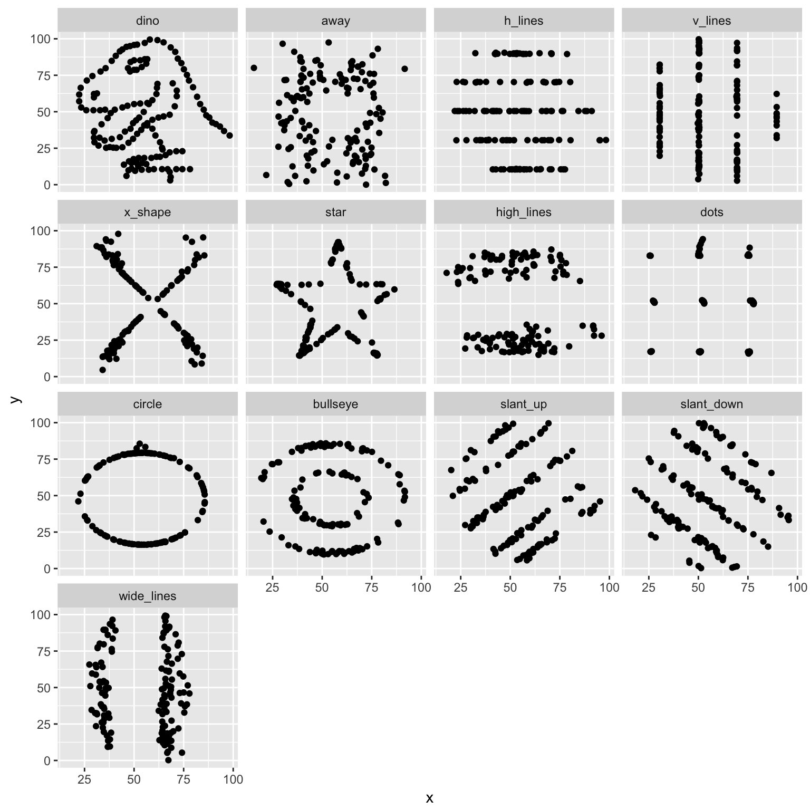

Why visualize data?
Research methods classes in graduate school generally teach important skills such as probability and statistical theory, regression, analysis of variance (ANOVA), maximum likelihood estimation (MLE), etc. While these are important methods for analyzing data and assessing research questions, sometimes drawing a picture (aka visualization) can be more precise than conventional statistical computations.1
Consider the following 13 data sets. What are the corresponding relationships between \(X\) and \(Y\)? Using traditional metrics, the relationships appear identical across the samples:
| ID | \(N\) | \(\bar{X}\) | \(\bar{Y}\) | \(\sigma_{X}\) | \(\sigma_{Y}\) | \(R\) |
|---|---|---|---|---|---|---|
| 1 | 142 | 54.3 | 47.8 | 16.8 | 26.9 | -0.064 |
| 2 | 142 | 54.3 | 47.8 | 16.8 | 26.9 | -0.064 |
| 3 | 142 | 54.3 | 47.8 | 16.8 | 26.9 | -0.062 |
| 4 | 142 | 54.3 | 47.8 | 16.8 | 26.9 | -0.069 |
| 5 | 142 | 54.3 | 47.8 | 16.8 | 26.9 | -0.066 |
| 6 | 142 | 54.3 | 47.8 | 16.8 | 26.9 | -0.063 |
| 7 | 142 | 54.3 | 47.8 | 16.8 | 26.9 | -0.069 |
| 8 | 142 | 54.3 | 47.8 | 16.8 | 26.9 | -0.060 |
| 9 | 142 | 54.3 | 47.8 | 16.8 | 26.9 | -0.068 |
| 10 | 142 | 54.3 | 47.8 | 16.8 | 26.9 | -0.069 |
| 11 | 142 | 54.3 | 47.8 | 16.8 | 26.9 | -0.069 |
| 12 | 142 | 54.3 | 47.8 | 16.8 | 26.9 | -0.069 |
| 13 | 142 | 54.3 | 47.8 | 16.8 | 26.9 | -0.067 |
\(X\) and \(Y\) have the same mean and standard deviation in each dataset, and the correlation coefficient (Pearson’s \(r\)) is virtually identical. If we estimated linear regression models for each dataset, we would obtain virtually identical coefficients (again suggesting the relationships are identical):

But what happens if we draw a picture?2

Remarkably each of the datasets have the same summary statistics and linear relationships, yet they are drastically different in appearance! A good picture tells the reader much more than any table or text can provide.
Session Info
## Session info -------------------------------------------------------------## setting value
## version R version 3.5.1 (2018-07-02)
## system x86_64, darwin15.6.0
## ui X11
## language (EN)
## collate en_US.UTF-8
## tz America/Chicago
## date 2018-07-30## Packages -----------------------------------------------------------------## package * version date source
## assertthat 0.2.0 2017-04-11 CRAN (R 3.5.0)
## backports 1.1.2 2017-12-13 CRAN (R 3.5.0)
## base * 3.5.1 2018-07-05 local
## bindr 0.1.1 2018-03-13 CRAN (R 3.5.0)
## bindrcpp 0.2.2 2018-03-29 CRAN (R 3.5.0)
## broom * 0.5.0 2018-07-17 CRAN (R 3.5.0)
## cellranger 1.1.0 2016-07-27 CRAN (R 3.5.0)
## cli 1.0.0 2017-11-05 CRAN (R 3.5.0)
## colorspace 1.3-2 2016-12-14 CRAN (R 3.5.0)
## compiler 3.5.1 2018-07-05 local
## crayon 1.3.4 2017-09-16 CRAN (R 3.5.0)
## datasets * 3.5.1 2018-07-05 local
## devtools 1.13.6 2018-06-27 CRAN (R 3.5.0)
## digest 0.6.15 2018-01-28 CRAN (R 3.5.0)
## dplyr * 0.7.6 2018-06-29 cran (@0.7.6)
## evaluate 0.11 2018-07-17 CRAN (R 3.5.0)
## forcats * 0.3.0 2018-02-19 CRAN (R 3.5.0)
## gganimate * 0.1.0.9000 2017-05-26 Github (dgrtwo/gganimate@bf82002)
## ggplot2 * 3.0.0 2018-07-03 CRAN (R 3.5.0)
## glue 1.3.0 2018-07-17 CRAN (R 3.5.0)
## graphics * 3.5.1 2018-07-05 local
## grDevices * 3.5.1 2018-07-05 local
## grid 3.5.1 2018-07-05 local
## gtable 0.2.0 2016-02-26 CRAN (R 3.5.0)
## haven 1.1.2 2018-06-27 CRAN (R 3.5.0)
## hms 0.4.2 2018-03-10 CRAN (R 3.5.0)
## htmltools 0.3.6.9001 2018-07-30 Github (rstudio/htmltools@3aee819)
## httr 1.3.1 2017-08-20 CRAN (R 3.5.0)
## jsonlite 1.5 2017-06-01 CRAN (R 3.5.0)
## knitr * 1.20 2018-02-20 CRAN (R 3.5.0)
## lattice 0.20-35 2017-03-25 CRAN (R 3.5.1)
## lazyeval 0.2.1 2017-10-29 CRAN (R 3.5.0)
## lubridate 1.7.4 2018-04-11 CRAN (R 3.5.0)
## magrittr 1.5 2014-11-22 CRAN (R 3.5.0)
## memoise 1.1.0 2017-04-21 CRAN (R 3.5.0)
## methods * 3.5.1 2018-07-05 local
## modelr 0.1.2 2018-05-11 CRAN (R 3.5.0)
## munsell 0.5.0 2018-06-12 CRAN (R 3.5.0)
## nlme 3.1-137 2018-04-07 CRAN (R 3.5.1)
## pillar 1.3.0 2018-07-14 CRAN (R 3.5.0)
## pkgconfig 2.0.1 2017-03-21 CRAN (R 3.5.0)
## plyr 1.8.4 2016-06-08 CRAN (R 3.5.0)
## purrr * 0.2.5 2018-05-29 CRAN (R 3.5.0)
## R6 2.2.2 2017-06-17 CRAN (R 3.5.0)
## Rcpp 0.12.18 2018-07-23 CRAN (R 3.5.0)
## readr * 1.1.1 2017-05-16 CRAN (R 3.5.0)
## readxl 1.1.0 2018-04-20 CRAN (R 3.5.0)
## rlang 0.2.1 2018-05-30 CRAN (R 3.5.0)
## rmarkdown 1.10 2018-06-11 CRAN (R 3.5.0)
## rprojroot 1.3-2 2018-01-03 CRAN (R 3.5.0)
## rstudioapi 0.7 2017-09-07 CRAN (R 3.5.0)
## rvest 0.3.2 2016-06-17 CRAN (R 3.5.0)
## scales 0.5.0 2017-08-24 CRAN (R 3.5.0)
## stats * 3.5.1 2018-07-05 local
## stringi 1.2.4 2018-07-20 CRAN (R 3.5.0)
## stringr * 1.3.1 2018-05-10 CRAN (R 3.5.0)
## tibble * 1.4.2 2018-01-22 CRAN (R 3.5.0)
## tidyr * 0.8.1 2018-05-18 CRAN (R 3.5.0)
## tidyselect 0.2.4 2018-02-26 CRAN (R 3.5.0)
## tidyverse * 1.2.1 2017-11-14 CRAN (R 3.5.0)
## tools 3.5.1 2018-07-05 local
## tweenr * 0.1.5 2016-10-10 CRAN (R 3.5.0)
## utils * 3.5.1 2018-07-05 local
## withr 2.1.2 2018-03-15 CRAN (R 3.5.0)
## xml2 1.2.0 2018-01-24 CRAN (R 3.5.0)
## yaml 2.2.0 2018-07-25 CRAN (R 3.5.0)Example drawn from The Datasaurus Dozen by Justin Matejka and George Fitzmaurice.↩
Source code from Recreating the Datasaurus Dozen Using
tweenrandggplot2.↩
This work is licensed under the CC BY-NC 4.0 Creative Commons License.